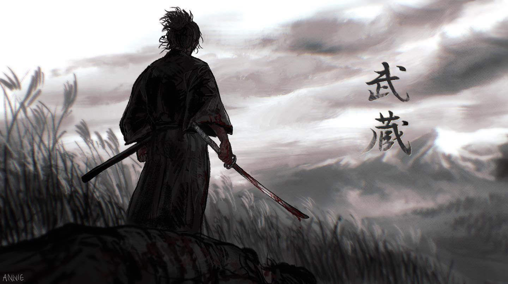
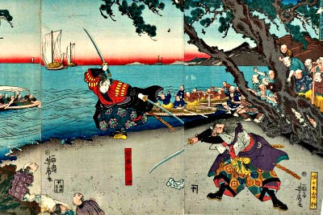
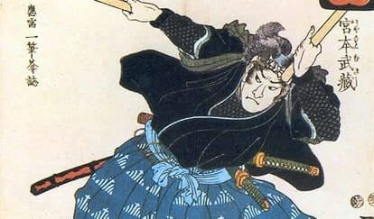
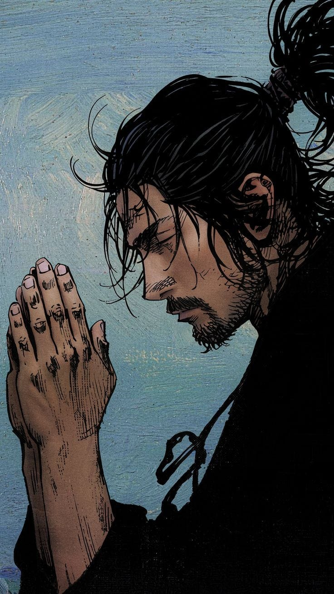
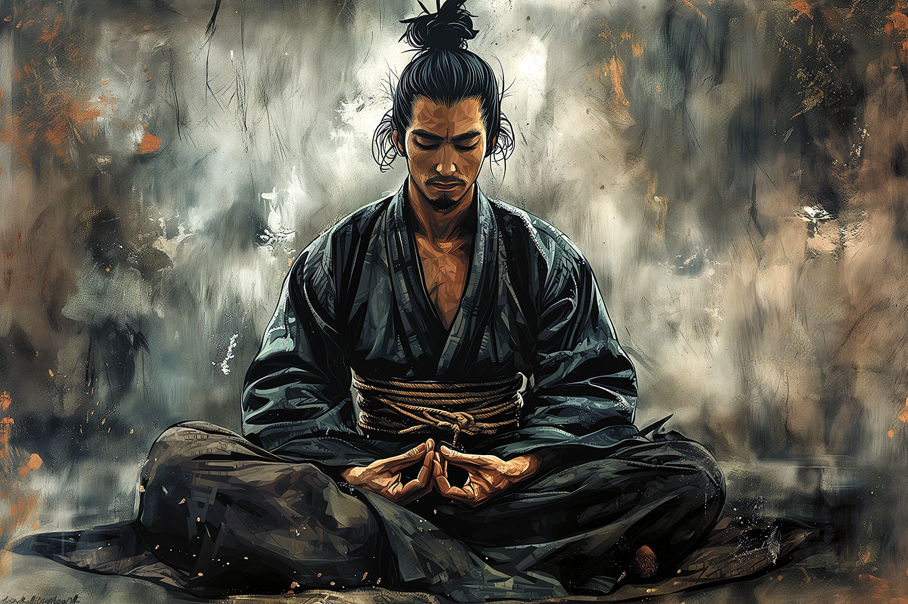
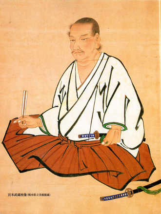

Discover the life and philosophy of one of the greatest swordsmen in history.
Musashi began his career as a fighter early in life; at age 13, he killed a man in single combat. In 1600, he was on the losing side of the Battle of Sekigahara, which paved the way for establishing the Tokugawa shogunate, becoming one of the rōnin (masterless samurai). Beyond his martial prowess, Musashi was also an accomplished artist, engaging in painting, sculpture, calligraphy, and poetry. He practiced suiboku-ga, a Japanese ink painting style.
Miyamoto Musashi’s philosophy revolves around self-discipline, adaptability, and self-reliance. His Book of Five Rings teaches strategy through five elements:
His Dokkōdō ("The Path of Aloneness") outlines 21 principles emphasizing detachment, simplicity, and honor. Key teachings include:
Musashi believed in minimalism, personal discipline, and mastering one's craft, inspiring people far beyond martial arts.
Musashi's influence extends beyond martial arts into modern business strategies and personal development. His teachings on adaptability and strategy are applied in leadership, decision-making, and personal growth.
His **Book of Five Rings** is widely studied not only in martial arts but also in military strategy, business management, and self-improvement. His emphasis on discipline and self-reliance has inspired countless people to master their respective fields.
Musashi's impact on Japanese culture is profound, with numerous books, movies, and video games drawing inspiration from his life. His legacy is honored in Japan, where his strategies and philosophy continue to be taught.
Images and artwork of Miyamoto Musashi.
 